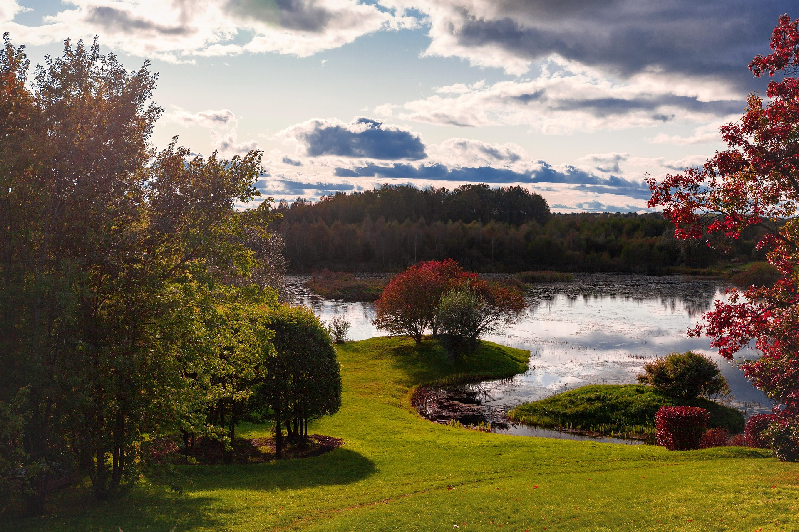
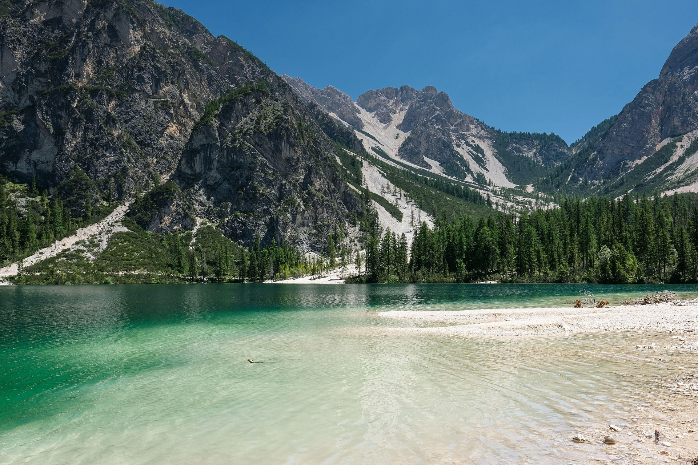

travel places

Golden Valley Horizon
This breathtaking landscape captures a lush green valley bathed in the warm, radiant glow of a golden sunset. In the foreground, vibrant green grass stretches across rolling hills, while a magnificent canopy of dense trees frames the left side of the view. Nestled quietly in the distance, a charming countryside house overlooks a serene coastal horizon where the sun gently dips below the earth. The sky above is a dramatic blend of rolling gray clouds and striking golden light, creating a perfect harmony between nature's peacefulness and the powerful, cinematic beauty of a fading summer evening.
MoreCrimson Coastline Silhouette
A striking visual narrative of history meeting nature, this image showcases the iconic Maiden's Tower standing as a magnificent silhouette against a fiery sunset. The deep orange and crimson tones of the sky reflect beautifully off the gentle ripples of the sea, creating a warm, nostalgic atmosphere. Dark, heavy clouds hover above, adding a touch of drama to the serene landscape. In the distant background, the faint outlines of city mosques and passing ships enhance the coastal charm, capturing a timeless evening moment where the brilliant sun sets perfectly behind a legendary piece of historic architecture.
More
Autumn Reflection Lake
This stunning photograph beautifully captures the transitional charm of changing seasons in a peaceful countryside setting. A pristine, glassy lake sits at the center, flawlessly reflecting the soft daylight and a dramatic sky filled with scattered white clouds. The vibrant green meadow in the foreground is beautifully complemented by clusters of trees, some showcasing rich autumn reds and deep oranges. The dense forest in the background creates a natural boundary, making the entire scene feel like a hidden, untouched paradise where the calm water and colorful foliage bring a deep sense of peace and natural harmony.
More
Alpine Turquoise Coast
An absolute masterpiece of nature, this image displays a stunning contrast between majestic, rugged mountain peaks and a serene alpine lake. The crystal-clear turquoise and emerald waters gently lap against a clean, white sandy shoreline, inviting onlookers into a pristine wilderness. Towering rocky cliffs, marked with patches of white snow and green vegetation, rise sharply into a flawless, deep blue sky. A dense forest of pine trees lines the base of the mountains, framing the vibrant water and creating an incredibly refreshing, cinematic view that perfectly showcases the breathtaking scale of untouched mountain landscapes.
MoreSrvices
Custom Tour Planning
Discover handcrafted itineraries tailored exactly to your dream destinations. We map out perfect travel routes, hidden local gems, and exciting activities to ensure your next vacation is completely stress-free.
Instant Online Booking
Secure your favorite travel spots instantly through our seamless online platform. From premium resort stays to guided city tours, book your entire getaway with secure payments and immediate digital confirmation.
Verified Local Guides
Explore the world safely with our top-rated, certified local travel guides. Gain authentic cultural insights, discover breathtaking scenic spots, and experience every destination like a true local insider.